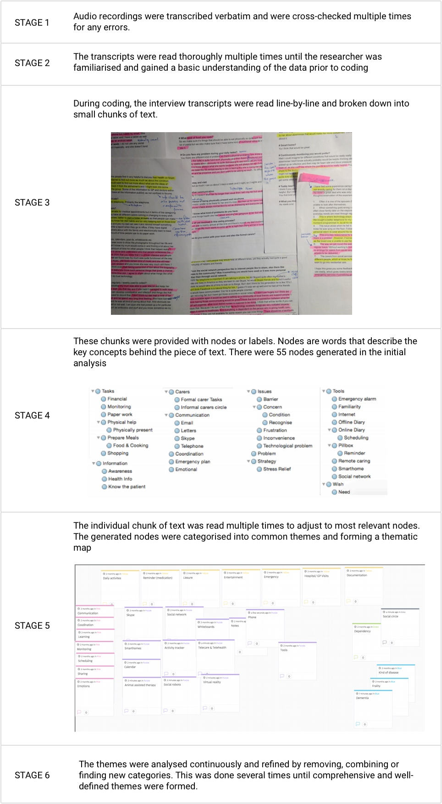

Extensive user research on the state of carers in the UK.
Aim & Objective
There are at least 2 million elderly people in the UK who need additional support (physically, mentally, financially and emotionally). The need for extra support by elderly is largely being met by informal carers (ICs) - some of whom are themselves at risk of a potential health issue, or in full-time work, putting extra stress and burden on their regular health and professional activities.
The aim of the study was to gather a better understanding of the needs and challenges met by informal carers (ICs) caring for an elderly person, and how technology usage can support them. We aim to find new ways and design opportunities using technology for fulfilling the needs of carers in a more efficient way which in turn will mean elderly people could be felt more at home and independence.
I was the lead UX designer on this project working with senior stakeholders from Microsoft, Kent County Council, Good care group alongside Department of Computer Science and Brain Sciences at UCL who were responsible for building a prototype.
Findings from literature review
I started by studying the existing research. Research on technological usage of informal carers is insufficient. The literature review identified that the existing technologies are not effective or efficient for the informal carer. There are problems adopting technologies, and there is a gap in understanding the needs and insights. Some of them do not take a user-centered approach ignoring the users needs; some has not considered the emotional, learnability and feasibility aspects.
Therefore, there was a need to explore the attitudes, behaviours, and difficulties of informal carers (ICs).
The research questions that have driven the investigations are addressed below:
- What are the key concerns of an informal carer (IC)? What are the barriers they encounter and how do they overcome them?
- How do carers use technology? Under what conditions and circumstances do they use technology? What kind of problems do they face with technology?
- What design opportunities exist for technology to better respond and manage the needs of informal carers (ICs)?
Methodology
To make the study robust, reliable and oriented towards an in-depth qualitative study, the data collection was divided into three phases i.e. semi-structured interview (Phase 1), diary study (Phase 2) and follow-up interview (Phase 3) involving 11 informal carers. Initially, a semi-structured interview was conducted; a diary study followed this, and finally a follow-up interview.
Semi-structured interview
A semi-structured interview was chosen as a tool to gain insights into the thoughts of ICs during the caregiving process, get new ideas, and discover information that might not have been previously thought of the research.
Dairy Study
After the interview, a week-long diary study was run with the participants who chose to participate in the second phase. It helped to gain a more in-depth information.
Follow-up interview
The follow-up interview is used to address issues that came up during the data analysis or have been missed during the previous phases.
Data Analysis
An exploratory data analysis process was used to induce emerging theories from the data to get insights into the research question about how technology could be used to help carers. Therefore, the coding technique used was a thematic analysis.
The data was analysed following the six phases (see Figure 10) of thematic analysis (Braun & Clarke, 2006) for a reliable and systematic approach to data analysis. NVIVO3 [1] and paper/pen/highlighter were used as the data analysis tool.
Result
The results from the data analysis of semi-structured interviews and diary studies presented us with nine themes: Problems with formal carers; social circle of caring; importance of information; IC uses different communication tools for different purpose; coordination tools used by IC are mostly low-tech; caring is emotional; Reassurance of the loved ones health; strategies to overcome barriers; and technological adaptation problem.
Solution
The study was significant as it revealed the essential needs of informal carers that can be used to design future technologies. Finally, the study proposed several design suggestions considering the various factors such as trust, context, ease of use, access to information, security and safety of both informal carer and the elderly people.
Next Steps
This study provided a for various research that were undergone in the future. Microsoft UK in collaboration with its academic and government partners produced a report “UK Future Care” (part of now known as Healthcare Next ) to address urgent requirements in the UK’s social care sector. This project laid down the foundation architecture to support the instrumentation of accessible homes that will lead to actionable insights to tackle key issues in social caring. It further suggested a paradigm shift in the health sector towards individual and self-care, prevention and user empowerment, so that people can remain independent in and around their own homes and within residential care homes.
Media Coverage